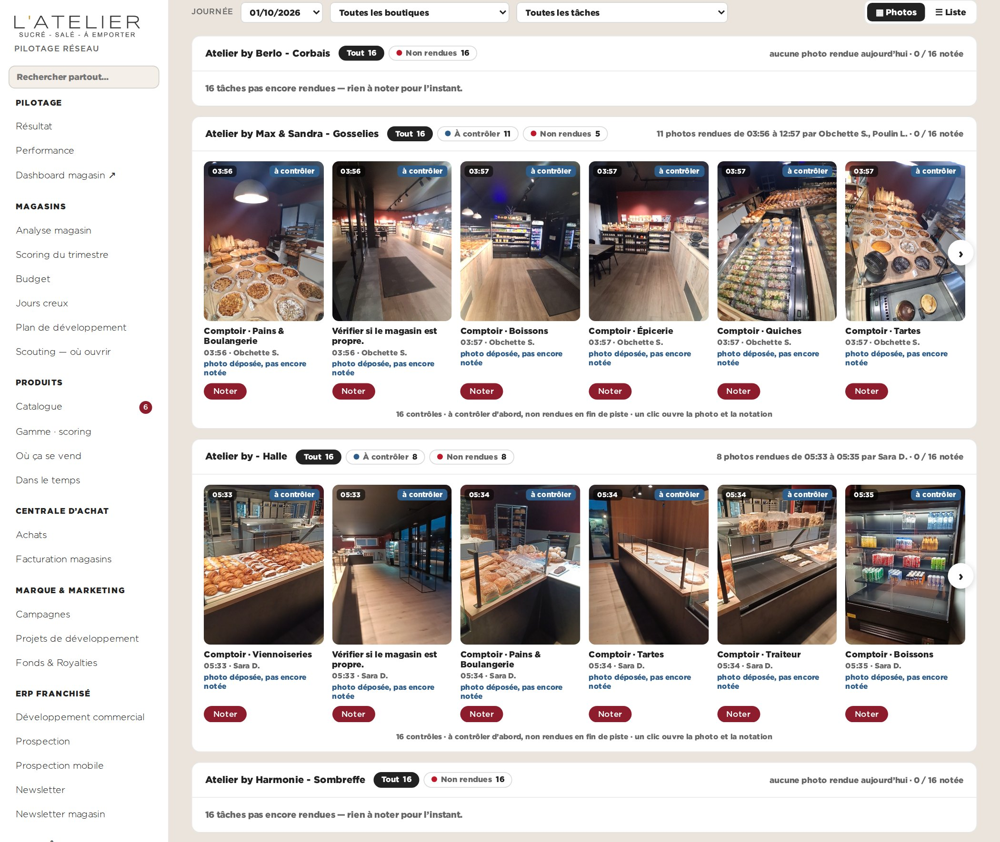
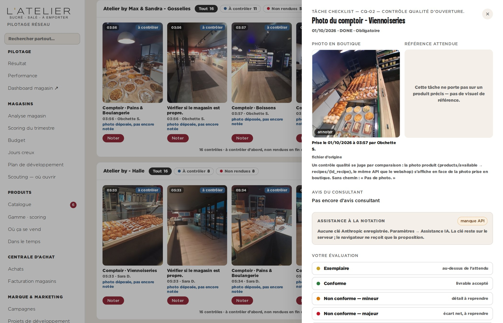

Cockpit · Tâches › Contrôle · maquette · données réelles du 01/10/2026Contrôle des tâches : les photos en carrousel, la note au clic
Même page, mêmes filtres, mêmes chiffres en tête. Sous les filtres, chaque boutique n’est plus un tableau de seize lignes mais le carrousel « Les contrôles en photo » du dashboard magasin : la photo, l’heure, l’état, qui l’a rendue, les écarts d’abord, les non rendues en fin de piste. Un clic sur une carte ouvre le volet de notation tel qu’il existe (photo en boutique, référence, barème, note au consultant). Données réelles du jeudi 1er octobre : quatre boutiques, 64 tâches, 19 photos rendues (Gosselies 11, Halle 8), aucune notée.

La page : un carrousel par boutique à la place du tableau

Un clic sur une carte : le volet de notation existant, avec la photo
Ce que ça apporte
- On note en regardant la photo, pas un libellé : la liste devient ce qu’on juge
- Le même carrousel que le franchisé voit sur son dashboard : une seule façon de lire les contrôles
- Une seule lecture groupée par boutique (/pwa/tasks/photos), déjà en place — rien de nouveau au serveur
- Les écarts notés viendraient en tête en orange, avec le repère dessiné sur la photo
- Le tableau reste à un clic (« Liste ») pour les colonnes commentaire et consultant
Limites
- Seize cartes par boutique : il faut faire défiler pour voir les non rendues
- Une boutique sans photo rendue n’a rien à montrer : une ligne de texte, pas de carrousel
- Les URL signées des photos expirent après 20 min : relecture silencieuse comme sur le dashboard